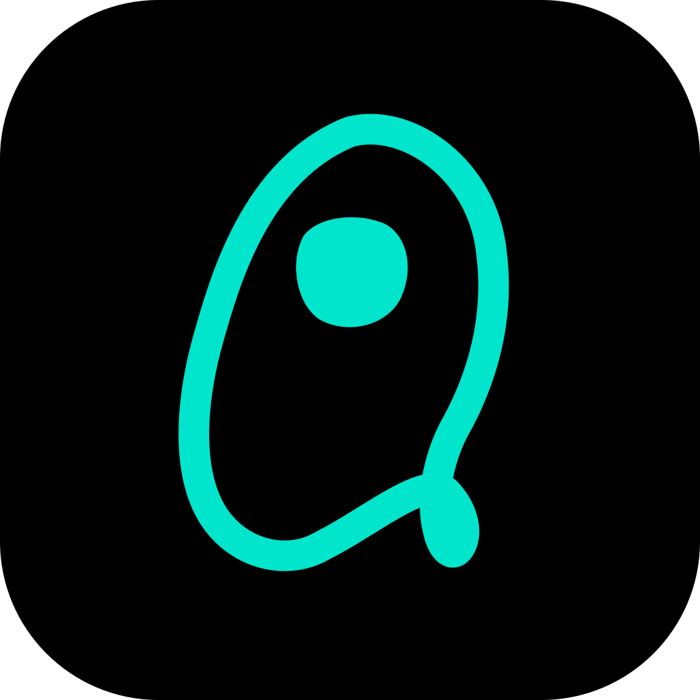
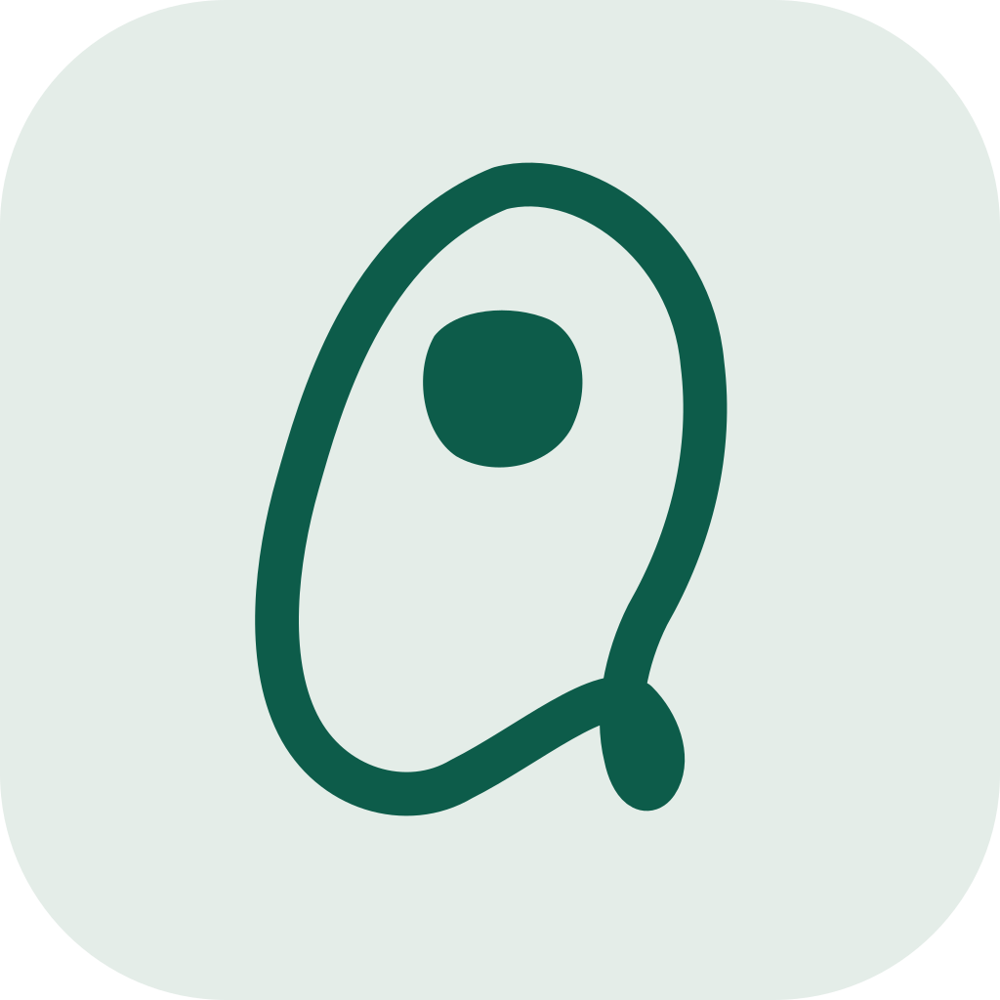
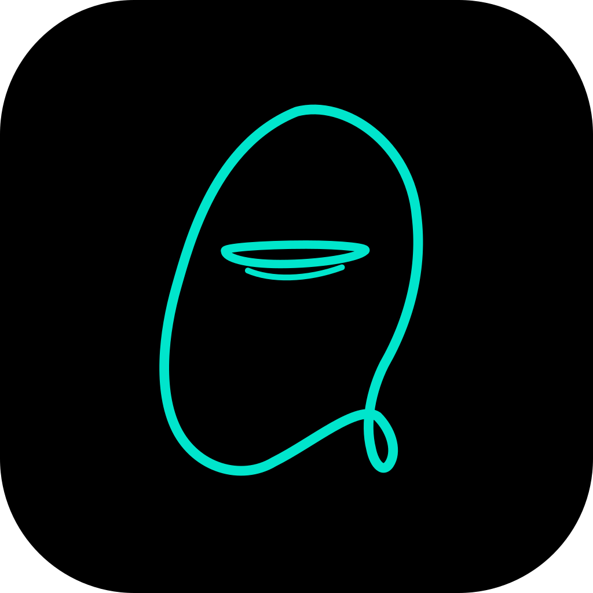
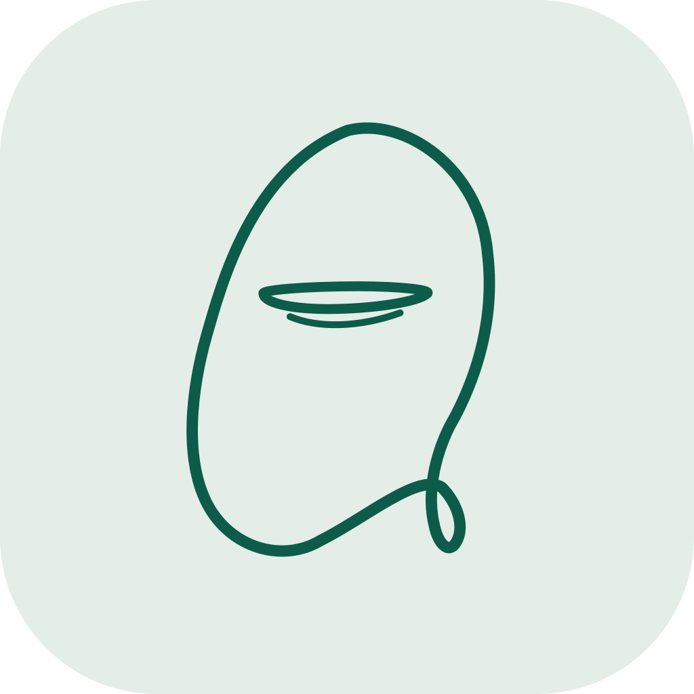
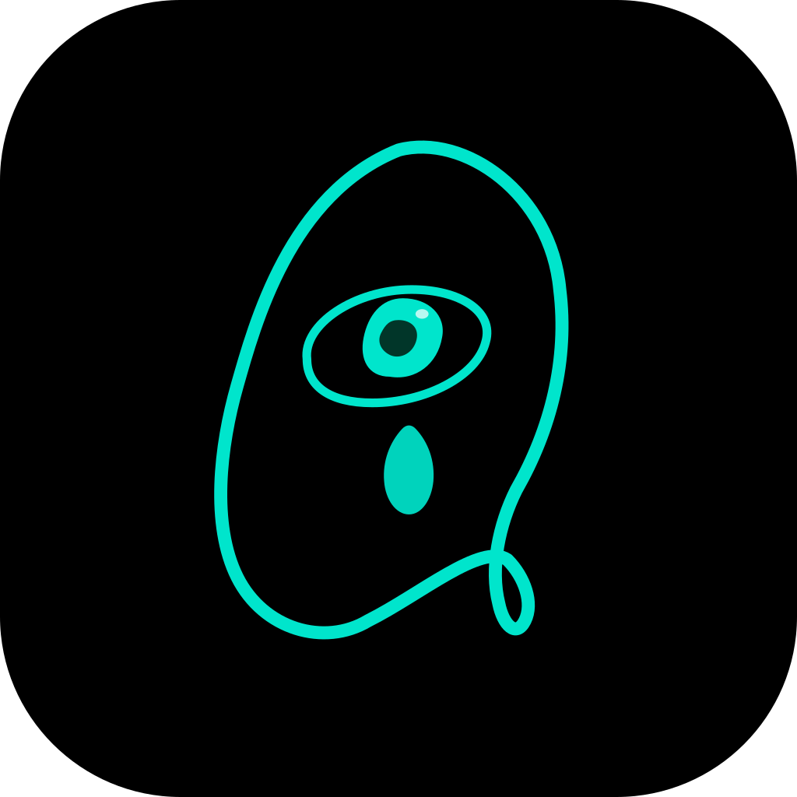
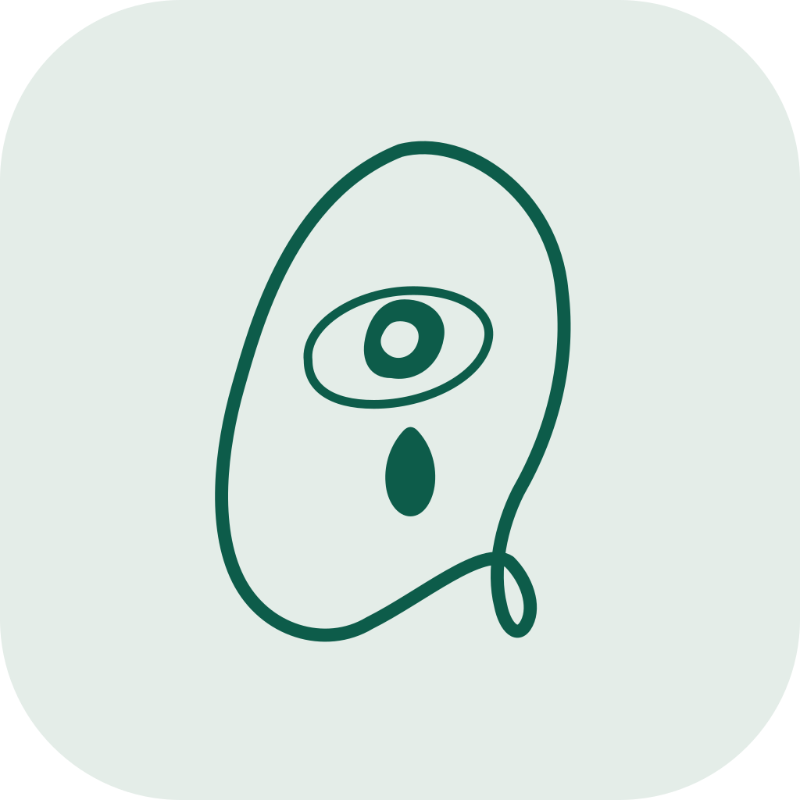

Dark / Animated
保留原本會看左看右、眨眼的探索感，適合 showcase、品牌頁與概念展示。
OddSpot Static System
這一版把會動的眼睛收斂成一套可交付的靜態 source assets。核心語言維持不變： 不規則 blob 外輪廓、偏心眼球、夜視螢光與磷光紙面兩個主題，再延伸成預設、閉眼、流淚錯誤三種狀態。
Motion Preview
這裡保留動態版作為角色語氣展示，下面的 source kit 則是可交付的靜態資產。也就是說你現在同時擁有 demo motion 與 production stills。
保留原本會看左看右、眨眼的探索感，適合 showcase、品牌頁與概念展示。
保留同一套眼皮與視線邏輯，但用單色紙面語言呈現。反光點維持關閉，避免淺色瞳孔內出現雜色。
Source Kit
SVG 為單一 source，可往 1024、512、256、128、64、32 等尺寸縮放。下面展示的是同一資產在不同輸出尺寸下的量感。
主視覺版本，適合 app icon、brand mark、登入前封面與探索狀態。

32public/brand/oddspot-icon-dark-open.svg
public/brand/oddspot-favicon-dark.svg
紙面感版本，適合瀏覽器 tab、淺色系系統 surface、press kit 和文件封面。

32public/brand/oddspot-icon-light-open.svg
public/brand/oddspot-favicon-light.svg
State Variants
預設版負責辨識，閉眼版負責安靜與暫停，流淚版負責故障與失落。這樣你之後加情境時，不會每次都重做一套新 icon。




Error Landing
錯誤頁不是只放一句「something went wrong」。這裡把它做成帶氣氛的 fallback surface，保留 OddSpot 的性格，但不故作可愛。
Static Page Preview
適合 API 掛掉、位置讀取失敗、內容已刪除或暫時封存時使用。 語氣維持冷靜，不把責任推給使用者；視覺上則用流淚眼睛承接「視線失聯」這個品牌隱喻。
Quick Opinions
你現在還沒完全決定每個狀態的用途，我先給一版偏產品設計角度的分法，避免之後把「error」和「quiet」混在一起用。
拿來做 app icon、marketing cover、brand avatar、app loading still、商店與下載頁。它是角色的正常狀態。
拿來做休眠、夜間、隱私、專注、排程維護、尚未開啟定位。它比較像 intentional quiet，不像 crash。
只留給失敗頁、資料損毀、讀取不到、權限封鎖或服務暫停。這樣情緒才不會被日常狀態稀釋。